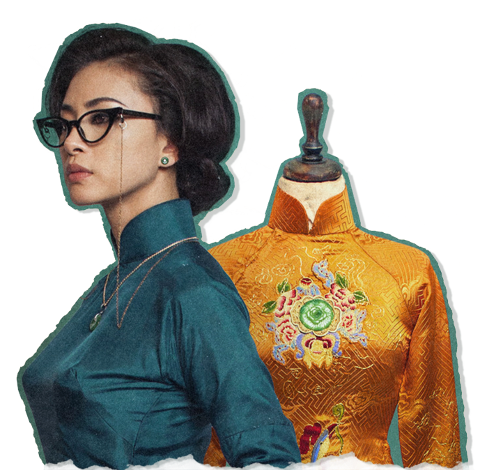
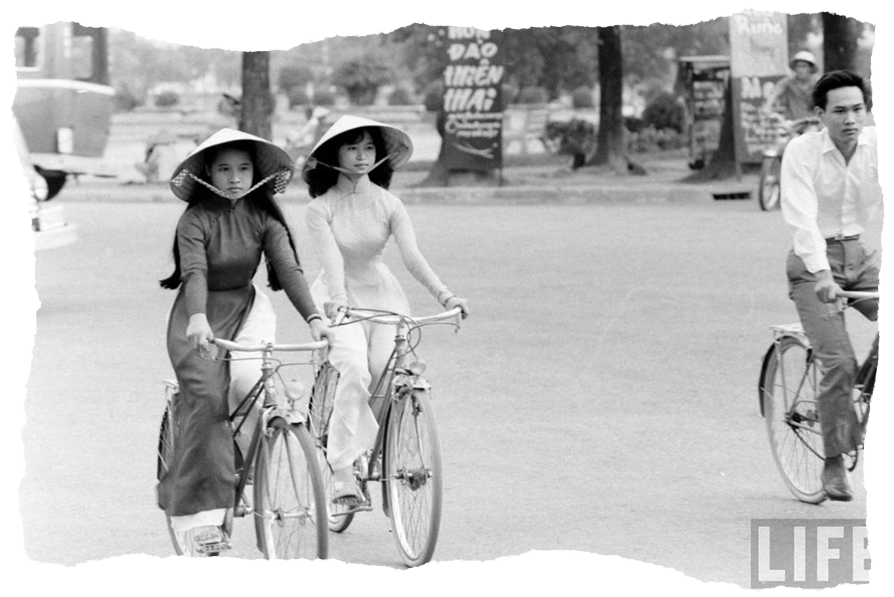
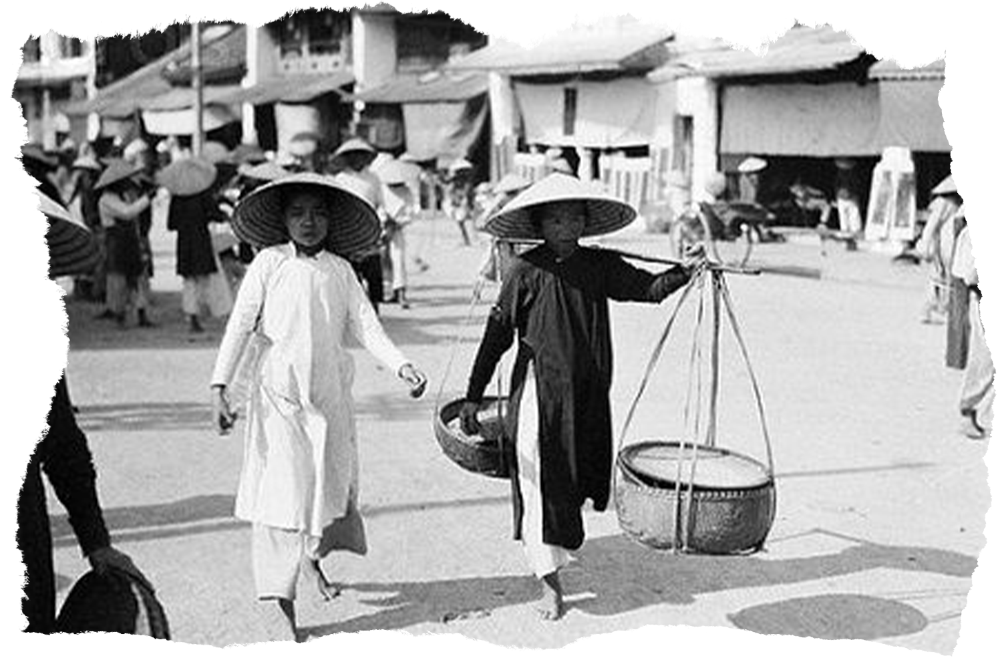
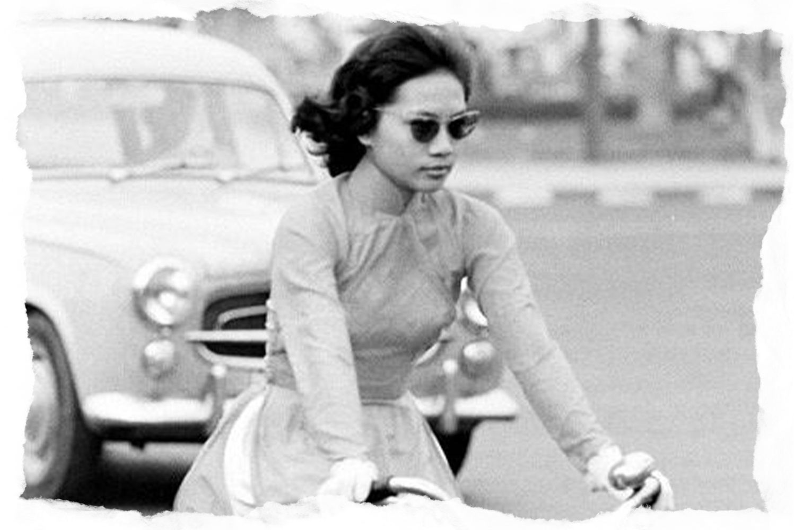
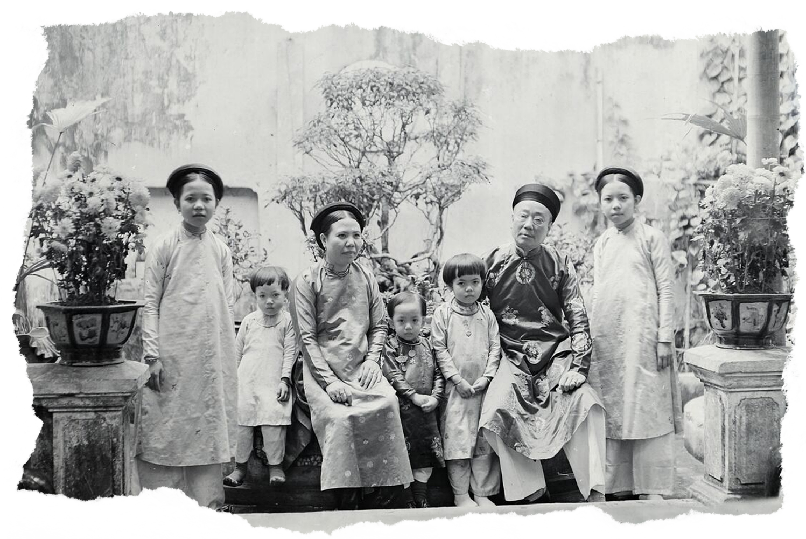
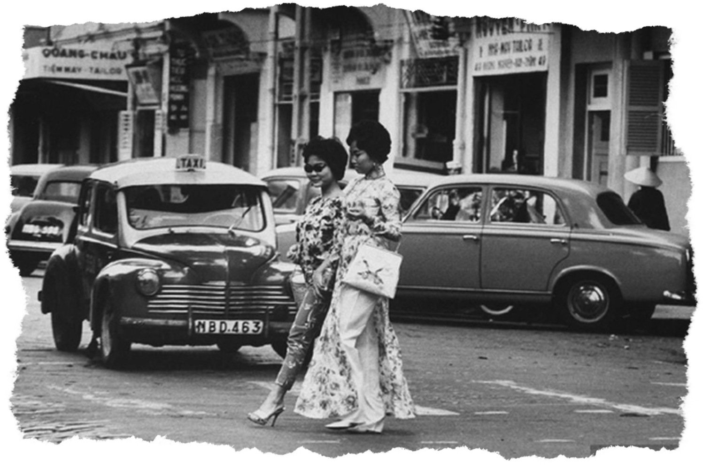

Step into the timeless elegance of the ao dai, where history, culture, and beauty are woven into every seam.

At a glance
Unfold the legacy behind this timeless garment.








How it all began
Journey through the history of Vietnam's most iconic attire.
-
- Four front-and-back panels
- A long, flowing skirt under the tunic
- A rectangular camisole underneath serves as a undergarment
- Silk sash tied around waist
- Usually wear with large, flat, round hat, headscarf
1645
FOUR PIECE AO DAI
-
- Four front-and-back panels
- A long, flowing skirt under the tunic
- A rectangular camisole underneath serves as a undergarment
- Silk sash tied around waist
- Usually wear with large, flat, round hat, headscarf
1744
FIVE PIECE AO DAI
-
- Made from luxurious fabric (silk or brocade)
- High Mandarin collar
- Wider sleeves
- Long, flowing silhouette, tight-fitting bodice with long panels
- Intricate embroidery: gold thread, phoenixes, dragons, lotuses, royal motifs
- Paired with a royal headdress or crown
1807
ROYAL AO DAI
-
- Two long panels (front & back)
- Closer fit to the body, flared bottom panels for movement
- High mandarin collar, structured neckline
- Set-in sleeves, side closures
- Soft silk or satin, light colors
- Inspired by Parisian fashion — structured shoulders, form-fitting design
- Often worn with heels and styled hair
1934
LE MUR AO DAI
-
- Front and back panels split high at the waist
- Tall Mandarin-style collar (about 3–5 cm)
- Long, fitted sleeves that extend to the wrists
- Tight, tailored bodice, waist shaping
- Minimal embellishment, favoring plain silk or subtle floral patterns
- Worn over a pair of loose, wide-legged pants
1950
HIGH-COLLARED AO DAI
-
- Rounded, U-shaped neckline
- High side slits paired with flowing silk pants for movement
- Slim, tailored bodice
- Long, fitted sleeves often set in smoothly at the shoulder
- Wide variety of fabric
1958
BOAT NECK AO DAI
-
- Diagonal sleeve seams running from the neckline to the underarm, with no distinct shoulder seam
- More comfortable and flattering fit
- Long, fitted sleeves that taper gently at the wrists
- Streamlined bodice, typically long, reaching below the knees
- Popular for formal wear
- A high, close-fitting mandarin collar is a common feature, though variations in neckline are also popular
1960
RAGLAN-SLEEVE AO DAI
-
- A lower or different neckline style
- Bold prints & patterns reflecting the hippie culture at that time
- Flowy silhouette, looser fit, shorter length, wider sleeves, such as bell-sleeves
- Lighter and more comfortable fabric like silk and linen for a relaxed look
- Often paired with headbands, bangles, or sandals
1968
HIPPIE AO DAI
-
- Unique, hand-painted designs, one-of-a-kind pattern
- High-quality fabrics to hold paint
- Wide range of motifs, diverse color palettes
- Minimal embellishments, mainly focus on the painted artwork
- Traditional long, flowing silhouette with a high collar and flowing sleeves
- Loose fitting pants
Late
1980s
PAINTED AO DAI
-
- Rich brocade fabric, intricate pattern
- Textured surface, motifs such as florals, phoenixes, dragons, geometric designs
- Shiny, elegant finish - fabric often reflects light, giving a royal aura
- Deep, elegant colors – gold, red, royal blue, emerald green, or ivory are common
- Traditional silhouette - fitted bodice, long tunic over wide-legged pants
- Minimal painting or embroidery, the fabric itself provides decoration
Late
1990s
BROCADE AO DAI

Where tradition breaths
Ao dai is a reflection of identity, pride, and timeless beauty.

THE CULTURAL WHISPERS
The ao dai stands as a powerful symbol of Vietnamese culture, embodying national identity, elegance, and dignity through its graceful design. Over time, it has evolved from traditional forms to modern styles, reflecting both continuity and adaptation in the face of change. Since 1975, the ao dai has grown beyond ceremonial use to become a unifying emblem of the Vietnamese spirit, representing resilience and cultural pride. Nowadays, ao dai is not only cherished within Vietnam but also recognized globally as a distinctive ambassador of the nation’s heritage.
A SILENT CODE OF SOCIETY
The ao dai carries strong social symbolism in Vietnamese life, as it reflects both the occasion and the wearer’s role in society. In schools, the white ao dai symbolizes the innocence and aspirations of youth, creating a shared identity among students. At weddings and festivals, brightly colored and richly decorated ao dai express joy, prosperity, and communal celebration. In contrast, during funerals or solemn gatherings, subdued or dark ao dai signify respect and mourning. Across these settings, the garment functions as a social marker, signaling formality, unity, and the wearer’s participation in collective cultural values.